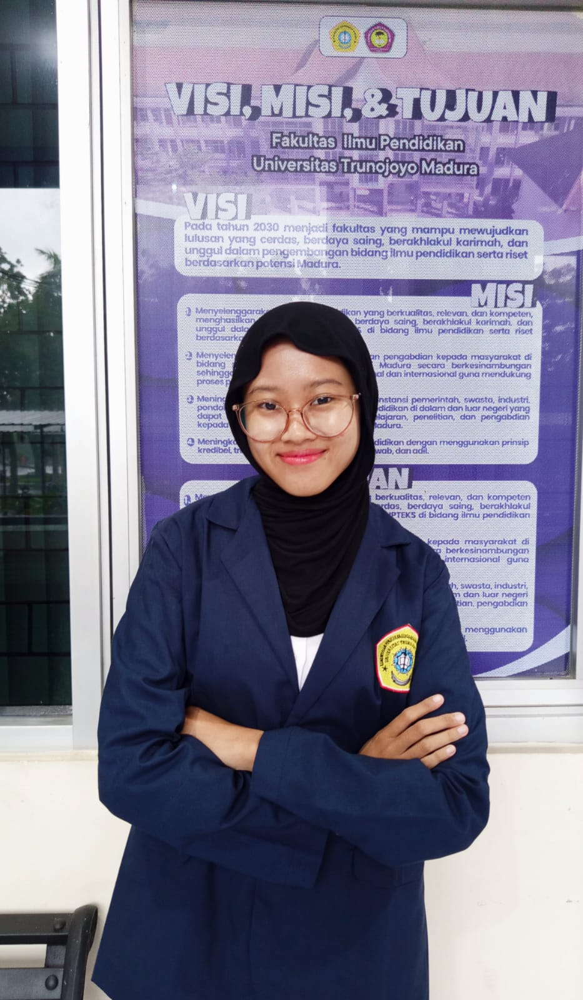

Profil Pengembang
Mengenal pengembang dan identitas media pembelajaran interaktif SIAGA.

DIKEMBANGKAN OLEH
Adinda Faradita Syahrani Putri
Pengembang Media Pembelajaran
Nama MediaSIAGA (Sistem Interaktif Analisis Gagasan dan Aksi)
Jenis MediaMedia pembelajaran berbasis web interaktif
MateriTeks eksplanasi bertema kebakaran hutan dan lahan (karhutla)
Mata PelajaranBahasa Indonesia
JenjangSekolah Menengah Pertama
Kelas/FaseKelas VII / Fase D
ElemenMembaca
KurikulumKurikulum Merdeka
Asal Institusi/SekolahUniversitas Trunojoyo Madura
Tahun Pengembangan2026
Dosen PembimbingIbu Mega Puspitasari, S.Pd., M.Pd.
IDENTITAS PENYELENGGARA
Logo Penyelenggara Lomba
 FKIP Ceria
FKIP CeriaSistem Interaktif Analisis Gagasan dan Aksi
SIAGA dirancang sebagai media pembelajaran Bahasa Indonesia berbasis web yang mengajak peserta didik membaca, memahami, menilai, dan membandingkan informasi melalui materi bertema kebakaran hutan dan lahan.